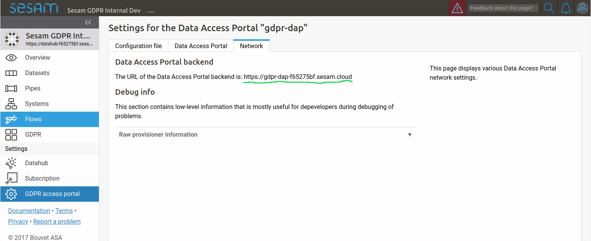

This document is intended for administrators that has access to the “databrowser.ini” configuration file.
Authentication and authorization via data#
Authentication is the process of figuring out who the user is.
Authorization is the process of figuring out what an authenticated user is allowed to do. The user’s permissions are specified by the documents in the solr database (see the Authorization section for details).
Authentication#
Overview#
The USE_X_REMOTE_USER_HEADER_AUTHENTICATION config-variable is set with the “use_x_remote_user_header” variable in the “[main]”-section of the “databrowser.ini” file.
This is a boolean value, with the following meaning:
The data access portal will attempt to map the specified username to an email-address like this:
Do a solr-search to find all items that has the username in any of the fields specified in the X_REMOTE_USER_USERNAME_FIELDS config-variable (which is set by the “x_remote_user_username_psi”-value in the “authentication”-section in the “databrowser.ini”-file).
Look for fields in the found items using the fieldnames specified in the X_REMOTE_USER_EMAIL_FIELDS config-variable (which is set by the “x_remote_user_email_psi”-value in the “authentication”-section in the “databrowser.ini”-file).
If any email-addresses are found, one of them will be stored in the “email”-attribute of the session-object.
If no email-addresses are found, and the username looks like an email-address, the username will be stored in the “email”-attribute of the session-object.
OpenID connect authentication provider config#
If the The USE_X_REMOTE_USER_HEADER_AUTHENTICATION config-variable is set to False, the data access portal can be configured to authenticate with an OpenID connect authentication provider.
To enable openid connect authentication, you first need one or more external authentication services. You must then tell the data access portal to use the authentication service(s). This is done by setting the “authentication_providers” config variable like this:
[authentication]
authentication_providers=
- provider_id: Microsoft
consumer_key: xxxxxxxx-xxxx-xxxx-xxxx-xxxxxxxxxxxx
consumer_secret: xxxxxxxxxxxxxxxxxxxxxxx
openid_configuration_url: https://login.microsoftonline.com/common/.well-known/openid-configuration
user_id_attribute: upn
- provider_id: Google
consumer_key: xxxxxxxxxx-xxxxxxxxxxxxxxxxxxxxxxxxxxxxxxxx.apps.googleusercontent.com
consumer_secret: xxxxxxxxxx-xxxxxxxxxxxxx
openid_configuration_url: https://accounts.google.com/.well-known/openid-configuration
user_id_attribute: email
- provider_id: Auth0
consumer_key: xxxxxxxxxxxxxxxxxxxxxxxxxxxxxxxx
consumer_secret: xxxxxxxxxxxxxxxxxxxxxxxxxxxxxxxxxxxxxxxxxxxxxxxxxxxxxxxxxxxxxxxx
openid_configuration_url: https://my_auth0_application.eu.auth0.com/.well-known/openid-configuration
user_id_attribute: email
allow_unverified_email: false
Each provider-info entry in the authentication_providers list must contain the following attributes:
- provider_id:
A unique id identifying the provider. This parameter is user-selectable and can be set to anything. The only requirement is that each provider_id must be unique.
Example: “keycloak_test”
- consumer_key:
The id the data access portal is registered with at the authentication provider.
- consumer_secret:
The secret the data access portal uses to authenticate itself with the provider.
The provider-info must contain either a “openid_configuration_url” or a “openid_configuration” parameter:
- openid_configuration_url:
An url that returns the provider metadata as specified here: https://openid.net/specs/openid-connect-discovery-1_0.html#ProviderMetadata
Example:
https://myserver.example.com/auth/realms/demo/.well-known/openid-configuration- openid_configuration:
If the provider doesn’t have a openid_configuration_url endpoint, the provider metadata can be supplied directly on the format specified in https://openid.net/specs/openid-connect-discovery-1_0.html#ProviderMetadata. (This is fiddly and not recommended. Use the ‘openid_configuration_url’ parameter whenever possible)
The provider-info can contain the following optional parameters:
- user_id_attribute: The claim in the UserInfoResponse (https://openid.net/specs/openid-connect-core-1_0.html#UserInfoResponse)
to use as the “user_id” value. Defaults to “sub”. Often, the “sub” claim contains a non-human-readable id, so it is usually better to use some other (unique) claim instead. For authentication against google, “email” should be used. For authentication against login.microsoftonline.com, “upn” should be used.
- contactinfo_attribute: The claim in the UserInfoResponse (https://openid.net/specs/openid-connect-core-1_0.html#UserInfoResponse)
to use as the “contactinfo” value in the returned user_info dict. Defaults to “email”.
- allow_unverified_email:
If true, users with unverified email addresses are allowed to log in. Default true. This can be set to false for authentication providers that are based on the user’s email address, and that don’t already verify the user’s email address.
- use_userinfo_endpoint: This can be set to False for providers where the userinfo endpoint isn’t
neccessary or doesn’t work for some reason (which is the case for the preprod environment from bankidnorge.no, for example). In such cases the user_id, etc is extracted from the IDToken (https://openid.net/specs/openid-connect-core-1_0.html#IDToken) instead.
- scope:
The openid scopes to request from the provider. Defaults to “openid profile email”
Configuring an OpenId connect authentication provider service#
- When a user wants to log in to the GDPR portal via an OpenID Connect authenticationservice, the following happens:
The GDPR portal redirects the user’s webbrowser to the authenticationservice’s login-page.
The user logs in (for instance via a norwegian BankID)
The authenticationservice redirect the user’s webbrowser back to the GDPR portal with an authentication-code in the url.
Most authenticationservices has a list of urls that can be used in step (3). For the GDPR portal, the url is on this form:
<Data Access Portal backend url>/login_callback/<provider_id>
Example:
https://gdpr-dap-f65275bf.sesam.cloud/login_callback/BankID
The “provider_id” is the id you specified in the “authentication_providers” configuration option.
You can find the “Data Access Portal backend url” on the “Network”-tab on the “GDPR access portal” page:
{kind=link}
In addition, some authenticationservices has a list of urls that it is allowed to redirect back to after the user has logged out. For the GDPR portal, this url is on this form:
<Data Access Portal backend url>
Example:
https://gdpr-dap-f65275bf.sesam.cloud
Authorization#
Once authentication has been done, the session object contains an “email”-attribute with the authenticated user’s email address. This is then used to do a search to figure out which items the user should be allowed to see.
This is done like this:
Do a solr-search for items that has the user’s email address in any of the fields specified in the EMAIL_FIELDS config-variable (which is set by the “email”-value in the “[search fields]”-section in the “databrowser.ini”-file)
Make a list of the ids of the found items and of the ids the items refers to via “psi*”-fields.
This list of ids is stored in the “psis”-attribute in the session object.
AUTHORIZATION_MODEL config-variable#
The AUTHORIZATION_MODEL config-variable is set with the “authorization model” variable in the “authentication”-section of the “databrowser.ini” file. It specifies how authorization is done.
The config-variable can have these values:
AUTH_FIELDS config-variable#
The AUTH_FIELDS config-variable is set with the “auth” variable in the “[search fields]”-section of the “databrowser.ini” file.
Its meaning depends on the value of the AUTHORIZATION_MODEL config-variable:
- AUTHORIZATION_MODEL=”OPEN” or AUTHORIZATION_MODEL=”AUTHENTICATED”:AUTH_FIELDS is optional. If it is set, only items that does not have any of the fields specified by the AUTH_FIELDS variable will be returned in a search.
- AUTHORIZATION_MODEL=”AUTHORIZED”AUTH_FIELDS must be set.Only items that does contain all the fields specified in AUTH_FIELDS will be included in the searchresults.Items with a AUTH_FIELDS-field that contains one of the ids stored in the “psis”-value in the session object will be added to the searchresults.Items with a ID_FIELDS-field that contains one of the ids stored in the “psis”-value in the session object will be added to the searchresults.
Authentication and authorization via a JWT token#
In addition to authenticating against Google or Microsoft Live and authorizing based on the data in solr, the data access portal supports authentication and authorization with a JWT authorization token created by the Sesam portal.
This is used as we want to be able to allow users to use their Sesam portal login credentials to log into the data access portal. This functionality is normally only used when the data access portal has been provisioned via the Sesam portal, and in this case the required configuration will have been done automatically.
JWT authentication#
JWT authentication is enabled by setting the “jwt_authentication_subscription_ids” configuration variable in the “authentication” section of the “databrowser.ini” file. The value should be one or more subscription-ids. Example:
[authentication]
jwt_authentication_subscription_ids =
789f4d46-91fe-418a-8652-0e7582f00d18
A value of “*” means that JWTs from all subscriptions will be accepted by the data access portal.
JWT authorization#
Once the user has been authenticated with a JWT, authorization is done by looking at the documents in the solr database (see the Authorization section for details).
In addition, if the JWT grants the user the “group:Admin” role, the user will be allowed to see all the solr documents and to edit the data access portal configuration.
Logging in with a JWT#
Logging in via a JWT is usually done behind the scenes by the Sesam portal GUI. An end-user will normally not need to know the details.
The login is done via the databrower url “/jwt_login”.
A “GET”-request will display a simple html form where the user can paste in a JWT string and click a “Login” button.
A “POST”-request will parse the specified JWT string, store the user’s credentials in the (server-side) http session and redirect to the data access portal frontpage.